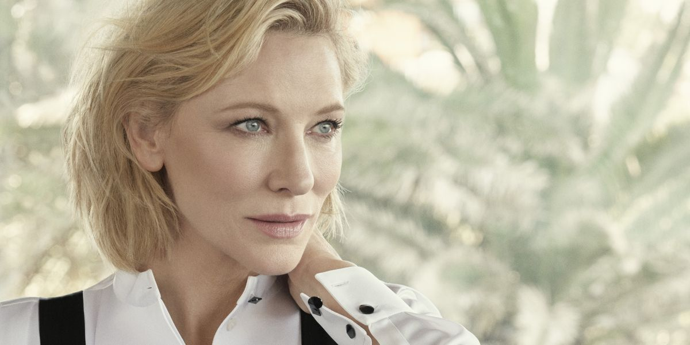

NUEVAS COLABORACIONES
Además de Father Mother Sister Brother y los rumores sobre How to Train Your Dragon, Cate Blanchett ha sido vinculada a distintos proyectos en desarrollo.
Entre ellos, posibles colaboraciones con directores de renombre y cintas de corte internacional que la mantendrán activa tanto en cine independiente como en grandes producciones. Aunque aún no se han revelado más títulos, su agenda promete seguir marcada por la versatilidad que ha definido toda su carrera.
